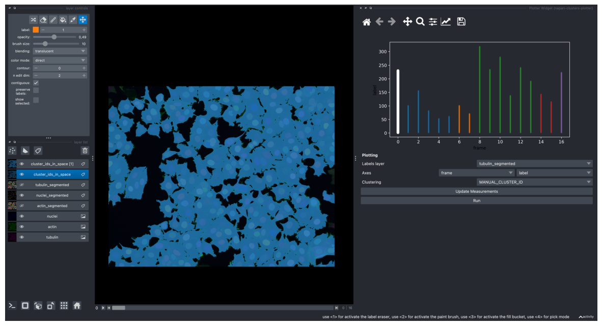
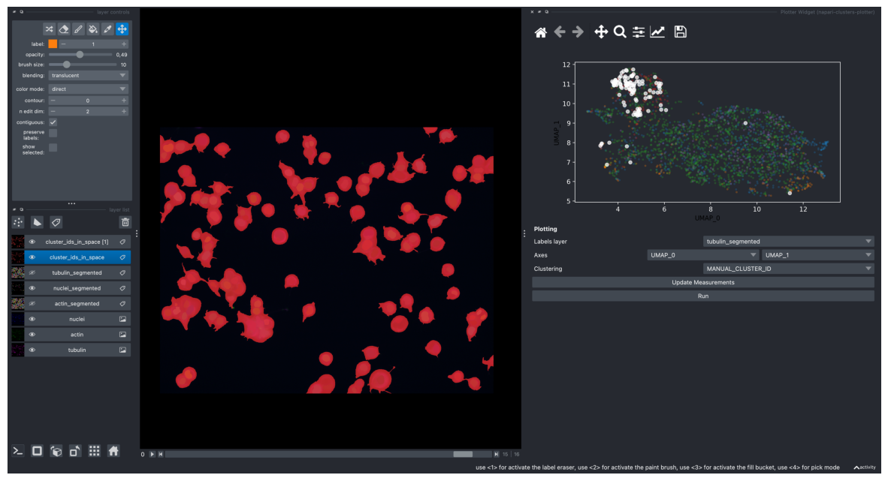
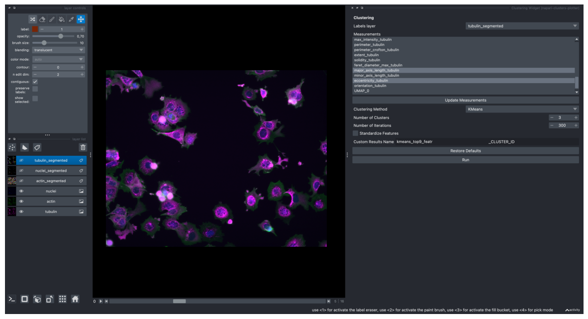
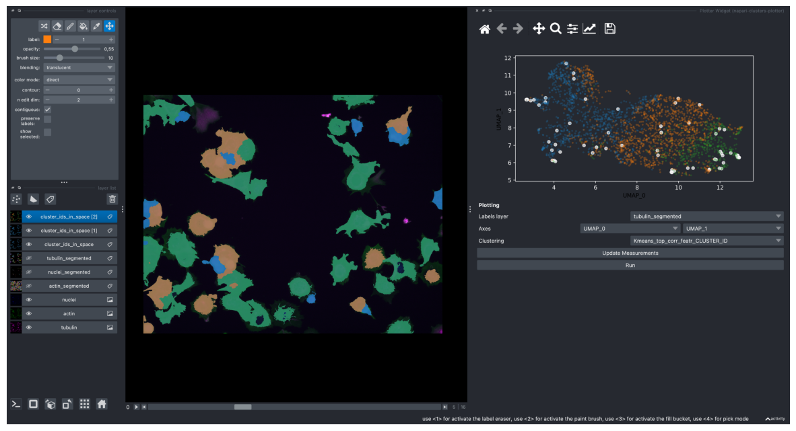
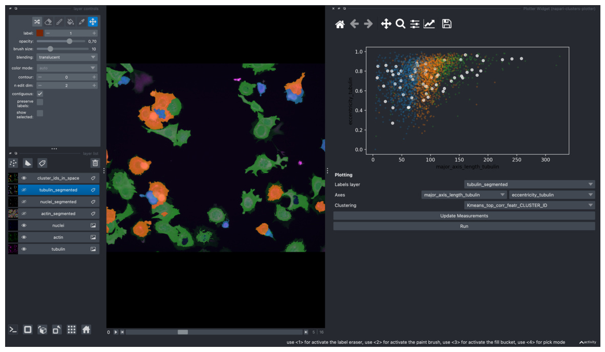

import os
import tifffile as tif
import numpy as np
import napari
import pandas as pd
import matplotlib.pyplot as plt
import warnings
# change settings to show all columns in a dataframe
pd.set_option('display.max_columns', None)
# ignore napari warnings
with warnings.catch_warnings():
warnings.simplefilter("ignore")
# create napari viewer instance
viewer = napari.Viewer()
Note: notebook 4_quantitative_measurements needs to be run again for a different compound before starting this one.
path = "/Users/laura/projects/Bio-image_analysis_school_ScadsAI/prepared_dataset"
nuclei_labels_path = os.path.join(path, "labels_nuclei")
actin_labels_path = os.path.join(path, "labels_actin")
tubulin_labels_path = os.path.join(path, "labels_tubulin")
os.listdir(path)
['aphidicolin_timelapse.tif',
'.DS_Store',
'nocodazole_timelapse.tif',
'AZ-I_timelapse.tif',
'taxol_timelapse.tif',
'labels_nuclei',
'latrunculin B_timelapse.tif',
'epothilone B_timelapse.tif',
'monastrol_timelapse.tif',
'AZ-H_timelapse.tif',
'DMSO_timelapse.tif',
'colchicine_timelapse.tif',
'doxorubicin_timelapse.tif',
'cytochalasin B_timelapse.tif',
'labels_tubulin',
'labels_actin',
'AZ-A_timelapse.tif']
filename1 = "nocodazole_timelapse"
filename2 = "latrunculin B_timelapse"
filename_control= "DMSO_timelapse"
img1 = tif.imread(os.path.join(path, f'{filename1}.tif'))
img2 = tif.imread(os.path.join(path, f'{filename2}.tif'))
img_c = tif.imread(os.path.join(path, f'{filename_control}.tif'))
# load nuclei and actin segmentation
labels_nuclei1 = tif.imread(os.path.join(nuclei_labels_path, f'{filename1}_labels_dapi.tif'))
labels_actin1 = tif.imread(os.path.join(actin_labels_path, f'{filename1}_labels_actin.tif'))
labels_tubulin1 = tif.imread(os.path.join(tubulin_labels_path, f'{filename1}_labels_tubulin.tif'))
labels_nuclei2 = tif.imread(os.path.join(nuclei_labels_path, f'{filename2}_labels_dapi.tif'))
labels_actin2 = tif.imread(os.path.join(actin_labels_path, f'{filename2}_labels_actin.tif'))
labels_tubulin2 = tif.imread(os.path.join(tubulin_labels_path, f'{filename2}_labels_tubulin.tif'))
labels_nuclei_c = tif.imread(os.path.join(nuclei_labels_path, f'{filename_control}_labels_dapi.tif'))
labels_actin_c = tif.imread(os.path.join(actin_labels_path, f'{filename_control}_labels_actin.tif'))
labels_tubulin_c = tif.imread(os.path.join(tubulin_labels_path, f'{filename_control}_labels_tubulin.tif'))
img1 = img1[:, np.newaxis, :, :, :]
# do the same for all label images
labels_actin1 = labels_actin1[:, np.newaxis, :, :]
labels_nuclei1 = labels_nuclei1[:, np.newaxis, :, :]
labels_tubulin1 = labels_tubulin1[:, np.newaxis, :, :]
img2 = img2[:, np.newaxis, :, :, :]
# do the same for all label images
labels_actin2 = labels_actin2[:, np.newaxis, :, :]
labels_nuclei2 = labels_nuclei2[:, np.newaxis, :, :]
labels_tubulin2 = labels_tubulin2[:, np.newaxis, :, :]
img_c = img_c[:, np.newaxis, :, :, :]
# do the same for all label images
labels_actin_c = labels_actin_c[:, np.newaxis, :, :]
labels_nuclei_c = labels_nuclei_c[:, np.newaxis, :, :]
labels_tubulin_c = labels_tubulin_c[:, np.newaxis, :, :]
# since with napari-clusters-plotter we can use only image, we will combine both images into one timelapse,
# where in timepoints 0-7 we have compound 1, in 8-15 timepoints we have compound 2, and in 16th control DMSO
print(f"Shape of the first image: {img1.shape}")
print(f"Shape of the second image: {img2.shape}")
print(f"Shape of the control image: {img_c.shape}")
# the shapes of both images need to be the same to combine them like this:
combined_timelapse = np.concatenate((img1, img2, img_c), axis=0)
Shape of the first image: (8, 1, 1024, 1280, 3)
Shape of the second image: (8, 1, 1024, 1280, 3)
Shape of the control image: (1, 1, 1024, 1280, 3)
# viewer.add_image(combined_timelapse) # and then in the viewer right click on the layer - split RGB or:
viewer.add_image(
combined_timelapse,
name=["tubulin", "actin", "nuclei"],
colormap=["magenta", "green", "blue"],
channel_axis=4)
[<Image layer 'tubulin' at 0x28f5bfe50>,
<Image layer 'actin' at 0x1721b9fa0>,
<Image layer 'nuclei' at 0x1721f9c70>]
# do the same for label images
combined_actin_labels = np.concatenate((labels_actin1, labels_actin2, labels_actin_c), axis=0)
combined_tubulin_labels = np.concatenate((labels_tubulin1, labels_tubulin2, labels_tubulin_c), axis=0)
combined_nuclei_labels = np.concatenate((labels_nuclei1, labels_nuclei2, labels_nuclei_c), axis=0)
# add segmentation layers to the viewer
viewer.add_labels(combined_actin_labels, name="actin_segmented")
viewer.add_labels(combined_nuclei_labels, name="nuclei_segmented")
viewer.add_labels(combined_tubulin_labels, name="tubulin_segmented")
<Labels layer 'tubulin_segmented' at 0x2f332ac40>
# load corresponding measurements csv
df1 = pd.read_csv(f'{filename1}_measurements.csv')
df2 = pd.read_csv(f'{filename2}_measurements.csv')
df_c = pd.read_csv(f'{filename_control}_measurements.csv')
# combine both measurements tables into one
offset = df1['frame'].max() + 1
# adjust frame column for the second compound
df2['frame'] += offset
# new offset for the control image, which is the last one
offset = df2['frame'].max() + 1
df_c['frame'] += offset
combined_df = pd.concat([df1, df2, df_c])
combined_df
| frame | label | area_dapi | equivalent_diameter_dapi | mean_intensity_dapi | min_intensity_dapi | max_intensity_dapi | perimeter_dapi | perimeter_crofton_dapi | extent_dapi | solidity_dapi | feret_diameter_max_dapi | major_axis_length_dapi | minor_axis_length_dapi | eccentricity_dapi | orientation_dapi | area_actin | equivalent_diameter_actin | mean_intensity_actin | min_intensity_actin | max_intensity_actin | perimeter_actin | perimeter_crofton_actin | extent_actin | solidity_actin | feret_diameter_max_actin | major_axis_length_actin | minor_axis_length_actin | eccentricity_actin | orientation_actin | area_tubulin | equivalent_diameter_tubulin | mean_intensity_tubulin | min_intensity_tubulin | max_intensity_tubulin | perimeter_tubulin | perimeter_crofton_tubulin | extent_tubulin | solidity_tubulin | feret_diameter_max_tubulin | major_axis_length_tubulin | minor_axis_length_tubulin | eccentricity_tubulin | orientation_tubulin | |
|---|---|---|---|---|---|---|---|---|---|---|---|---|---|---|---|---|---|---|---|---|---|---|---|---|---|---|---|---|---|---|---|---|---|---|---|---|---|---|---|---|---|---|---|---|
| 0 | 0 | 1 | 51.0 | 8.058239 | 0.167979 | 0.083643 | 0.254647 | 34.485281 | 35.375614 | 0.750000 | 0.944444 | 17.000000 | 16.699044 | 4.066449 | 0.969897 | -1.564183 | 883.0 | 33.530143 | 0.119379 | 0.081159 | 0.192271 | 146.876154 | 144.414011 | 0.617051 | 0.899185 | 53.460266 | 50.832770 | 24.742622 | 0.873544 | -1.468765 | 1478.0 | 43.380273 | 0.143015 | 0.029722 | 0.366054 | 206.917785 | 201.337046 | 0.565633 | 0.856812 | 70.519501 | 66.715717 | 34.099459 | 0.859512 | 1.318986 |
| 1 | 0 | 2 | 649.0 | 28.745999 | 0.165379 | 0.115242 | 0.210037 | 101.112698 | 98.542366 | 0.780048 | 0.941945 | 35.341194 | 34.562224 | 25.219399 | 0.683788 | 1.438942 | 1389.0 | 42.053891 | 0.155570 | 0.106280 | 0.219324 | 183.710678 | 177.242860 | 0.665230 | 0.871940 | 59.203040 | 56.035253 | 34.286886 | 0.790950 | 1.459215 | 2416.0 | 55.463021 | 0.100016 | 0.029331 | 0.238952 | 252.409163 | 242.765807 | 0.567136 | 0.865330 | 84.059503 | 79.006359 | 41.878135 | 0.847960 | -0.483112 |
| 2 | 0 | 3 | 965.0 | 35.052477 | 0.178177 | 0.087361 | 0.250929 | 116.811183 | 113.425463 | 0.724474 | 0.971803 | 41.880783 | 41.374456 | 29.809831 | 0.693467 | -0.855667 | 5343.0 | 82.479809 | 0.152169 | 0.045411 | 0.453140 | 557.830519 | 546.056318 | 0.466190 | 0.676244 | 159.840546 | 156.791723 | 56.600349 | 0.932569 | -1.338031 | 3355.0 | 65.358386 | 0.140226 | 0.029331 | 0.383653 | 304.758405 | 294.881169 | 0.513468 | 0.862690 | 114.908659 | 94.147899 | 49.308249 | 0.851883 | -0.998811 |
| 3 | 0 | 4 | 681.0 | 29.446156 | 0.190088 | 0.100372 | 0.327138 | 105.254834 | 102.469357 | 0.709375 | 0.935440 | 34.985711 | 30.833248 | 30.070002 | 0.221123 | 0.357786 | 1723.0 | 46.837931 | 0.192738 | 0.045411 | 0.591304 | 342.800036 | 328.820739 | 0.396457 | 0.471151 | 112.946890 | 111.582379 | 36.281730 | 0.945660 | -1.458035 | 952.0 | 34.815572 | 0.165720 | 0.037544 | 0.412202 | 140.669048 | 136.044137 | 0.689855 | 0.878229 | 49.040799 | 46.718906 | 29.029679 | 0.783518 | 1.430018 |
| 4 | 0 | 5 | 176.0 | 14.969641 | 0.143112 | 0.117100 | 0.171004 | 56.627417 | 56.367675 | 0.666667 | 0.956522 | 24.083189 | 22.479143 | 11.103994 | 0.869480 | -1.503134 | 468.0 | 24.410574 | 0.100213 | 0.079227 | 0.142995 | 98.805087 | 99.787840 | 0.609375 | 0.858716 | 34.928498 | 28.834912 | 22.419438 | 0.628870 | -1.254344 | 1678.0 | 46.222245 | 0.098445 | 0.029331 | 0.338287 | 192.503571 | 186.168095 | 0.747772 | 0.853510 | 60.207973 | 49.546863 | 46.315471 | 0.355224 | 0.940611 |
| ... | ... | ... | ... | ... | ... | ... | ... | ... | ... | ... | ... | ... | ... | ... | ... | ... | ... | ... | ... | ... | ... | ... | ... | ... | ... | ... | ... | ... | ... | ... | ... | ... | ... | ... | ... | ... | ... | ... | ... | ... | ... | ... | ... | ... |
| 218 | 16 | 219 | 612.0 | 27.914559 | 0.228325 | 0.162602 | 0.294309 | 95.941125 | 93.639408 | 0.809524 | 0.977636 | 36.674242 | 36.376578 | 22.083566 | 0.794639 | 1.503317 | 5728.0 | 85.399743 | 0.059505 | 0.033823 | 0.086790 | 399.385822 | 383.482865 | 0.623965 | 0.863952 | 153.209008 | 138.180600 | 57.224254 | 0.910219 | -1.561466 | 5159.0 | 81.047164 | 0.127046 | 0.029626 | 0.507514 | 412.421356 | 399.897290 | 0.630993 | 0.861413 | 146.030819 | 131.954569 | 54.136550 | 0.911966 | -1.549621 |
| 219 | 16 | 220 | 501.0 | 25.256544 | 0.168067 | 0.123577 | 0.217886 | 88.041631 | 86.150217 | 0.824013 | 0.972816 | 32.984845 | 32.388596 | 20.667636 | 0.769941 | -1.563516 | 2712.0 | 58.762451 | 0.071224 | 0.033823 | 0.180600 | 282.929978 | 271.112306 | 0.623448 | 0.768054 | 88.842557 | 79.161028 | 52.439570 | 0.749113 | 1.341769 | 2522.0 | 56.666658 | 0.135754 | 0.029626 | 0.385144 | 274.237590 | 265.193911 | 0.596217 | 0.795333 | 96.664368 | 81.256961 | 46.949464 | 0.816185 | 1.271864 |
| 220 | 16 | 221 | 260.0 | 18.194567 | 0.138030 | 0.099187 | 0.175610 | 72.627417 | 71.536626 | 0.738636 | 0.966543 | 32.062439 | 31.240097 | 11.340435 | 0.931786 | -1.568107 | 1604.0 | 45.191550 | 0.071948 | 0.034461 | 0.105935 | 210.124892 | 200.551648 | 0.668333 | 0.878423 | 75.239617 | 71.259864 | 32.045703 | 0.893179 | 1.474066 | 2334.0 | 54.513678 | 0.079832 | 0.029626 | 0.173036 | 279.166522 | 272.778387 | 0.736742 | 0.861891 | 101.202767 | 107.910973 | 29.962604 | 0.960679 | -1.497768 |
| 221 | 16 | 222 | 172.0 | 14.798554 | 0.167338 | 0.087805 | 0.227642 | 65.935029 | 65.388194 | 0.792627 | 0.955556 | 31.016125 | 31.027703 | 7.395085 | 0.971182 | -1.560152 | 2313.0 | 54.267882 | 0.089133 | 0.033823 | 0.176771 | 368.279221 | 353.010209 | 0.590805 | 0.642322 | 135.181360 | 151.749307 | 30.689377 | 0.979337 | 1.554727 | 1740.0 | 47.068427 | 0.124112 | 0.029626 | 0.381280 | 315.752309 | 304.552333 | 0.491803 | 0.602285 | 123.320720 | 131.987967 | 26.355545 | 0.979861 | -1.521874 |
| 222 | 16 | 223 | 43.0 | 7.399277 | 0.149783 | 0.086179 | 0.206504 | 30.485281 | 31.583376 | 0.716667 | 0.934783 | 15.000000 | 14.664421 | 3.934382 | 0.963337 | 1.563685 | 1219.0 | 39.396434 | 0.077260 | 0.033823 | 0.130823 | 167.982756 | 161.939156 | 0.609500 | 0.863314 | 51.224994 | 44.378772 | 39.890167 | 0.438242 | -1.499674 | 1269.0 | 40.196281 | 0.084577 | 0.029626 | 0.267926 | 176.639610 | 180.939813 | 0.666492 | 0.891152 | 56.142675 | 52.837074 | 33.841353 | 0.767971 | 1.503483 |
2739 rows × 44 columns
# add measurements table to the properties of the tubulin labels layer
viewer.layers['tubulin_segmented'].properties = combined_df
Selected labels layer: tubulin_segmented
Selected measurements: ['area_dapi', 'equivalent_diameter_dapi', 'mean_intensity_dapi', 'min_intensity_dapi', 'max_intensity_dapi', 'perimeter_dapi', 'perimeter_crofton_dapi', 'extent_dapi', 'solidity_dapi', 'feret_diameter_max_dapi', 'major_axis_length_dapi', 'minor_axis_length_dapi', 'eccentricity_dapi', 'orientation_dapi', 'area_actin', 'equivalent_diameter_actin', 'mean_intensity_actin', 'min_intensity_actin', 'max_intensity_actin', 'perimeter_actin', 'perimeter_crofton_actin', 'extent_actin', 'solidity_actin', 'feret_diameter_max_actin', 'major_axis_length_actin', 'minor_axis_length_actin', 'eccentricity_actin', 'orientation_actin', 'area_tubulin', 'equivalent_diameter_tubulin', 'mean_intensity_tubulin', 'min_intensity_tubulin', 'max_intensity_tubulin', 'perimeter_tubulin', 'perimeter_crofton_tubulin', 'extent_tubulin', 'solidity_tubulin', 'feret_diameter_max_tubulin', 'major_axis_length_tubulin', 'minor_axis_length_tubulin', 'eccentricity_tubulin', 'orientation_tubulin']
/Users/laura/micromamba/envs/devbio-napari-env/lib/python3.9/site-packages/umap/umap_.py:1943: UserWarning: n_jobs value -1 overridden to 1 by setting random_state. Use no seed for parallelism.
warn(f"n_jobs value {self.n_jobs} overridden to 1 by setting random_state. Use no seed for parallelism.")
Napari status bar display of label properties disabled because https://github.com/napari/napari/issues/5417 and https://github.com/napari/napari/issues/4342
Dimensionality reduction finished
/Users/laura/micromamba/envs/devbio-napari-env/lib/python3.9/site-packages/napari/components/viewer_model.py:10: FutureWarning: Labels.color is deprecated since 0.4.19 and will be removed in 0.5.0, please set Labels.colormap directly with an instance of napari.utils.colormaps.DirectLabelColormap instead.
TYPE_CHECKING,
/Users/laura/micromamba/envs/devbio-napari-env/lib/python3.9/site-packages/napari/utils/_proxies.py:144: FutureWarning: Labels.color is deprecated since 0.4.19 and will be removed in 0.5.0, please set Labels.colormap directly with an instance of napari.utils.colormaps.DirectLabelColormap instead.
setattr(self.__wrapped__, name, value)
/Users/laura/micromamba/envs/devbio-napari-env/lib/python3.9/site-packages/napari/utils/_proxies.py:144: FutureWarning: Labels.color is deprecated since 0.4.19 and will be removed in 0.5.0, please set Labels.colormap directly with an instance of napari.utils.colormaps.DirectLabelColormap instead.
setattr(self.__wrapped__, name, value)
screenshot = viewer.screenshot(canvas_only=False)
plt.figure(figsize=(15, 10))
plt.imshow(screenshot)
plt.axis('off')
plt.show()

/Users/laura/micromamba/envs/devbio-napari-env/lib/python3.9/site-packages/napari/utils/_proxies.py:144: FutureWarning: Labels.color is deprecated since 0.4.19 and will be removed in 0.5.0, please set Labels.colormap directly with an instance of napari.utils.colormaps.DirectLabelColormap instead.
setattr(self.__wrapped__, name, value)
# UMAP with all of features
screenshot = viewer.screenshot(canvas_only=False)
plt.figure(figsize=(15, 10))
plt.imshow(screenshot)
plt.axis('off')
plt.show()

# get layer's properties containing UMAP results
df = pd.DataFrame(viewer.layers['tubulin_segmented'].properties)
from scipy.stats import spearmanr
correlations = {}
for column in df.columns:
# don't compute correlation for these columns
if column in ['label', 'frame', 'UMAP_0', 'UMAP_1', 't-SNE_0', 't-SNE_1', 'index'] or '_CLUSTER_ID' in column:
continue
corr = spearmanr(df[column], df['UMAP_1'])[0]
correlations[column] = corr
# sort features based on the absolute value of correlation
sorted_features = sorted(correlations.items(), key=lambda x: abs(x[1]), reverse=True)
for feature, correlation in sorted_features:
print(f"{feature}: {correlation}")
major_axis_length_tubulin: -0.45427329839716024
eccentricity_tubulin: -0.435280176575601
feret_diameter_max_tubulin: -0.4336607627009672
major_axis_length_actin: -0.4291223605584224
eccentricity_actin: -0.41842276708710285
max_intensity_dapi: 0.4133006019709577
mean_intensity_dapi: 0.40984865036090656
extent_tubulin: 0.4016230410186044
feret_diameter_max_actin: -0.4005739702990752
perimeter_crofton_tubulin: -0.3536617596995489
perimeter_tubulin: -0.352592632881828
extent_actin: 0.3490281141459258
solidity_tubulin: 0.34162244893558275
mean_intensity_tubulin: 0.33198176347249264
perimeter_actin: -0.3278094544133843
perimeter_crofton_actin: -0.3254372727036644
solidity_actin: 0.3024339671147008
eccentricity_dapi: -0.2852678038740644
area_actin: -0.28342198005644476
equivalent_diameter_actin: -0.28342198005644476
max_intensity_tubulin: 0.27599778189154156
min_intensity_dapi: 0.2563386635720779
area_tubulin: -0.24361530735295392
equivalent_diameter_tubulin: -0.24361530735295392
extent_dapi: 0.24306834507608113
feret_diameter_max_dapi: -0.2330346670940936
major_axis_length_dapi: -0.2293713257461209
max_intensity_actin: 0.1871643681205241
mean_intensity_actin: 0.17589117664463438
perimeter_dapi: -0.17016692570674585
perimeter_crofton_dapi: -0.16978422208254318
minor_axis_length_actin: -0.13601508151132968
area_dapi: -0.11274393916665945
equivalent_diameter_dapi: -0.11274393916665945
min_intensity_actin: 0.10658633949816747
orientation_dapi: 0.08256501202213891
solidity_dapi: 0.07849134596027274
min_intensity_tubulin: 0.06977542719412674
minor_axis_length_tubulin: -0.05553353771533256
orientation_actin: 0.03847500917287264
orientation_tubulin: 0.017014170157706402
minor_axis_length_dapi: 0.014483154065609473
Selected labels layer: tubulin_segmented
Selected measurements: ['major_axis_length_tubulin', 'eccentricity_tubulin', 'feret_diameter_max_tubulin', 'major_axis_length_actin', 'max_intensity_dapi', 'mean_intensity_dapi', 'extent_tubulin', 'feret_diameter_max_actin']
Selected clustering method: KMeans
Kmeans_top_corr_featr predictions finished.
Napari status bar display of label properties disabled because https://github.com/napari/napari/issues/5417 and https://github.com/napari/napari/issues/4342
Numba: Attempted to fork from a non-main thread, the TBB library may be in an invalid state in the child process.
/Users/laura/micromamba/envs/devbio-napari-env/lib/python3.9/site-packages/napari/components/viewer_model.py:10: FutureWarning: Labels.color is deprecated since 0.4.19 and will be removed in 0.5.0, please set Labels.colormap directly with an instance of napari.utils.colormaps.DirectLabelColormap instead.
TYPE_CHECKING,
k-Means Clustering#
On most correlating 9 features
screenshot = viewer.screenshot(canvas_only=False)
plt.figure(figsize=(15, 10))
plt.imshow(screenshot)
plt.axis('off')
plt.show()

Plotting these clustering results on the obtained UMAP plot
screenshot = viewer.screenshot(canvas_only=False)
plt.figure(figsize=(15, 10))
plt.imshow(screenshot)
plt.axis('off')
plt.show()

screenshot = viewer.screenshot(canvas_only=False)
plt.figure(figsize=(15, 10))
plt.imshow(screenshot)
plt.axis('off')
plt.show()

Selected labels layer: tubulin_segmented
Selected measurements: ['area_dapi', 'equivalent_diameter_dapi', 'mean_intensity_dapi', 'min_intensity_dapi', 'max_intensity_dapi', 'perimeter_dapi', 'perimeter_crofton_dapi', 'extent_dapi', 'solidity_dapi', 'feret_diameter_max_dapi', 'major_axis_length_dapi', 'minor_axis_length_dapi', 'eccentricity_dapi', 'orientation_dapi', 'area_actin', 'equivalent_diameter_actin', 'mean_intensity_actin', 'min_intensity_actin', 'max_intensity_actin', 'perimeter_actin', 'perimeter_crofton_actin', 'extent_actin', 'solidity_actin', 'feret_diameter_max_actin', 'major_axis_length_actin', 'minor_axis_length_actin', 'eccentricity_actin', 'orientation_actin', 'area_tubulin', 'equivalent_diameter_tubulin', 'mean_intensity_tubulin', 'min_intensity_tubulin', 'max_intensity_tubulin', 'perimeter_tubulin', 'perimeter_crofton_tubulin', 'extent_tubulin', 'solidity_tubulin', 'feret_diameter_max_tubulin', 'major_axis_length_tubulin', 'minor_axis_length_tubulin', 'eccentricity_tubulin', 'orientation_tubulin']
Napari status bar display of label properties disabled because https://github.com/napari/napari/issues/5417 and https://github.com/napari/napari/issues/4342
Dimensionality reduction finished
Selected labels layer: tubulin_segmented
Selected measurements: ['area_dapi', 'equivalent_diameter_dapi', 'mean_intensity_dapi', 'min_intensity_dapi', 'max_intensity_dapi', 'perimeter_dapi', 'perimeter_crofton_dapi', 'extent_dapi', 'solidity_dapi', 'feret_diameter_max_dapi', 'major_axis_length_dapi', 'minor_axis_length_dapi', 'eccentricity_dapi', 'orientation_dapi', 'area_actin', 'equivalent_diameter_actin', 'mean_intensity_actin', 'min_intensity_actin', 'max_intensity_actin', 'perimeter_actin', 'perimeter_crofton_actin', 'extent_actin', 'solidity_actin', 'feret_diameter_max_actin', 'major_axis_length_actin', 'minor_axis_length_actin', 'eccentricity_actin', 'orientation_actin', 'area_tubulin', 'equivalent_diameter_tubulin', 'mean_intensity_tubulin', 'min_intensity_tubulin', 'max_intensity_tubulin', 'perimeter_tubulin', 'perimeter_crofton_tubulin', 'extent_tubulin', 'solidity_tubulin', 'feret_diameter_max_tubulin', 'major_axis_length_tubulin', 'minor_axis_length_tubulin', 'eccentricity_tubulin', 'orientation_tubulin']
/Users/laura/micromamba/envs/devbio-napari-env/lib/python3.9/site-packages/umap/umap_.py:1943: UserWarning: n_jobs value -1 overridden to 1 by setting random_state. Use no seed for parallelism.
warn(f"n_jobs value {self.n_jobs} overridden to 1 by setting random_state. Use no seed for parallelism.")
Napari status bar display of label properties disabled because https://github.com/napari/napari/issues/5417 and https://github.com/napari/napari/issues/4342
Dimensionality reduction finished
/Users/laura/micromamba/envs/devbio-napari-env/lib/python3.9/site-packages/napari/components/viewer_model.py:10: FutureWarning: Labels.color is deprecated since 0.4.19 and will be removed in 0.5.0, please set Labels.colormap directly with an instance of napari.utils.colormaps.DirectLabelColormap instead.
TYPE_CHECKING,
/Users/laura/micromamba/envs/devbio-napari-env/lib/python3.9/site-packages/napari/utils/_proxies.py:144: FutureWarning: Labels.color is deprecated since 0.4.19 and will be removed in 0.5.0, please set Labels.colormap directly with an instance of napari.utils.colormaps.DirectLabelColormap instead.
setattr(self.__wrapped__, name, value)